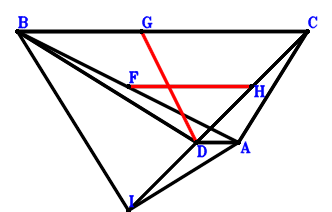

习题 1． 1__46如图，D在线段BC上，E是BD的中点，AD⊥EC. 求证: AD⊥DC.
习题 2． 2__45如图，B、C在线段AD上，AC^2+BD^2=AD^2. 求证: 2*AB*CD=BC^2.
习题 3． 3__43如图，D在线段CB上，BA^2=CB*DB. 求证: BA^2=DB*CB.
习题 4． 3__28如图，HC、GD交于点B，点A在以HG为直径的圆上，AB为圆的切线，D在线段BC上，AB^2=BC*BD. 求证: BC/HB=GB/BD.
习题 5． 22__31如图，L、J、H分别是AB、LC、BG的中点，A在线段IC上，G在线段AC上，A、K、C共线且3*KC=AK，BC⊥IH，2*IA=GC. 求证: BJ=LK.
习题 6． 5__18如图，平行四边形AKIB，G、J、B、H分别是AB、AK、AF、IC的中点，CB⊥JH. 求证: 2*CG=CF.
习题 7． 14__18如图，平行四边形AJHB，梯形ADFB，AD//BF，G、J分别是HD、JA的中点，D、E、F共线且2/3*DE=EF，DB⊥IG，3*BF=AD. 求证: AE⊥DB.
习题 8． 14__30如图，平行四边形IBDA，梯形ABGD，AD//BG，G、E、D共线且2/3*ED=GE，EA⊥BD，BH^2+HA^2=HD^2，3*BG=AD. 求证: BD=IH.
习题 9． 14__31如图，梯形DFBA，AD//BF，H、G分别是GD、BA的中点，A、I、D共线且3*ID=AI，F、E、D共线且2/3*ED=FE，3*BF=AD，BH=GI. 求证: EA⊥BD.
习题 10． 9__39如图，点C在以BA为直径的圆上，C在线段BD上，A在线段BG上. 求证: AC⊥BD.
习题 11． 9__29如图，C在线段EA上，D在线段BE上，EA⊥BE. 求证: CA⊥BD.
习题 12． 9__47如图，由三角形AKC的两边向外做正方形LQCA、KCOB，梯形DCBA，DA//CB，J、H分别是CD、AB的中点，I在线段CB上，AK⊥CD，CK⊥LD，IB=JH. 求证: DI=JH.
习题 13． 9__32如图，梯形BDAC，DA//BC，F、H分别是AB、DC的中点，G在线段BC上，D在线段IC上，IA⊥BI，BD=BI，BG=FH，AC=IA. 求证: GD=FH.

习题 14． 43__48如图，AE、CB交于点F，AB^2=AF*AE，AF*FE=FB*CF. 求证: AB=CA.
习题 15． 36__39如图，三角形ABC，A在线段DB上，G在线段CB上，也在以AB为直径的圆上，D、A、B共线且2*AB*DB=CB^2，AB*DB=GB*CB. 求证: AB=CA.
习题 16． 39__48如图，点C在以DA为直径的圆上，A、C、G分别在线段DH、OD、OA上，OA*OG=OC*OD. 求证: OA⊥GD.
习题 17． 38__47如图，正方形LAJB、KIDA，由三角形ABD的两边向外做正三角形BHD、EBA，AB⊥HE，AE⊥DJ. 求证: AJ⊥IE.
习题 18． 41__42平行四边形HBOC，G、F分别是CB、OA的中点，HA^2=CO^2+BO^2. 求证: 4*GF^2=BO^2+CO^2.
习题 19． 32__40如图，三角形AHC，H是DC的中点，H、I、A共线且HI=2*IA，G在线段CF上，AF⊥DG，CA=AF，2*CA=DC，DC=DG. 求证: DA⊥CI.
习题 20． 34__37如图，正方形ACHB、DIEA，E、A分别在线段CA、DB上，E、C在直线DB的同侧，AB=CA. 求证: DA=EA.
习题 21． 25__38如图，DA、FE交于点B，E、F、A、D四点共圆，DA⊥BE. 求证: AB⊥FE.
习题 22． 25__27如图，三角形ABC，D、G分别在线段CB、AB，G是三角形EBD的外心，CA⊥GB，AB=AC. 求证: DB=ED.
习题 23． 28__39如图，FE、AD交于点B，AF、ED交于点B，AB*FB=BD*BE. 求证: AB/BD=FB/BE.